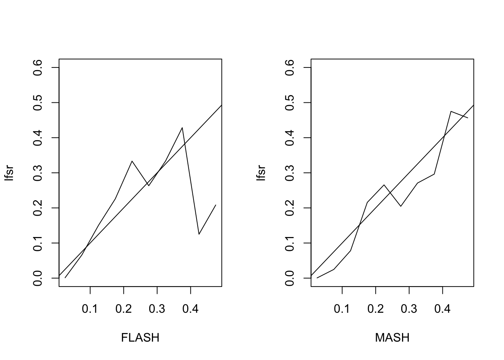
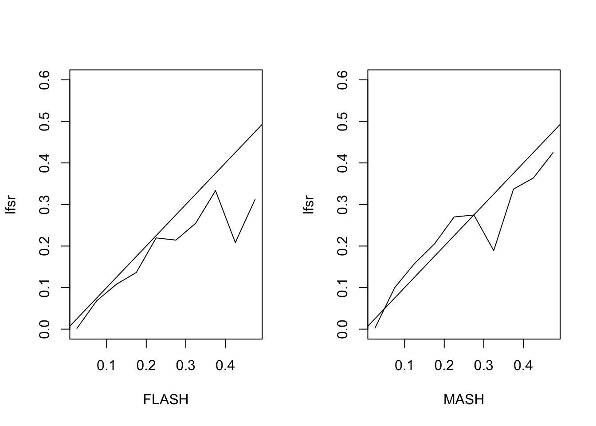
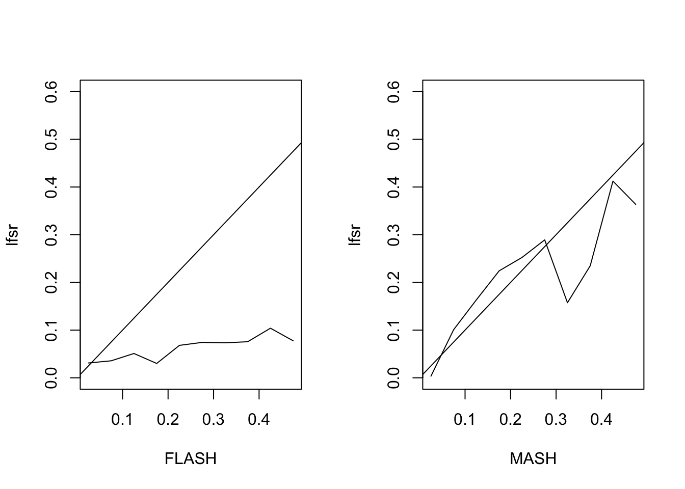

Last updated: 2018-06-09
workflowr checks: (Click a bullet for more information) ✖ R Markdown file: uncommitted changes
The R Markdown file has staged changes. To know which version of the R Markdown file created these results, you’ll want to first commit it to the Git repo. If you’re still working on the analysis, you can ignore this warning. When you’re finished, you can run wflow_publish to commit the R Markdown file and build the HTML.
✔ Environment: empty
Great job! The global environment was empty. Objects defined in the global environment can affect the analysis in your R Markdown file in unknown ways. For reproduciblity it’s best to always run the code in an empty environment.
✔ Seed:
set.seed(20180609)
The command set.seed(20180609) was run prior to running the code in the R Markdown file. Setting a seed ensures that any results that rely on randomness, e.g. subsampling or permutations, are reproducible.
✔ Session information: recorded
Great job! Recording the operating system, R version, and package versions is critical for reproducibility.
✔ Repository version: 53ca12c
wflow_publish or wflow_git_commit). workflowr only checks the R Markdown file, but you know if there are other scripts or data files that it depends on. Below is the status of the Git repository when the results were generated:
Ignored files:
Ignored: .DS_Store
Ignored: .Rproj.user/
Untracked files:
Untracked: docs/figure/
Unstaged changes:
Modified: analysis/mashvflash.Rmd
Staged changes:
New: analysis/mashvflash.Rmd
# FLASH v MASH ------------------------------------------------------
flash_v_mash <- function(Y, true_Y, nfactors) {
data <- flash_set_data(Y, S = 1)
fl <- fit_flash(data, nfactors)
m <- fit_mash(Y)
# Sample from FLASH fit
fl_sampler <- flash_lf_sampler(Y, fl, ebnm_fn=ebnm_pn, fixed="factors")
nsamp <- 200
fl_samp <- fl_sampler(nsamp)
res <- list()
res$fl_mse <- flash_pm_mse(fl_samp, true_Y)
res$m_mse <- mash_pm_mse(m, true_Y)
res$fl_ci <- flash_ci_acc(fl_samp, true_Y)
res$m_ci <- mash_ci_acc(m, true_Y)
res$fl_lfsr <- flash_lfsr(fl_samp, true_Y)
res$m_lfsr <- mash_lfsr(m, true_Y)
res
}
plot_res <- function(res) {
old_par <- par("mfrow")
par(mfrow=c(1, 2))
x <- seq(0.025, 0.475, by=0.05)
plot(x, res$fl_lfsr, type='l', ylim=c(0, 0.6), xlab="FLASH", ylab="lfsr")
abline(0, 1)
plot(x, res$m_lfsr, type='l', ylim=c(0, 0.6), xlab="MASH", ylab="lfsr")
abline(0, 1)
par(mfrow=old_par)
}
# Fit using FLASH ---------------------------------------------------
fit_flash <- function(data, nfactors) {
p <- ncol(data$Y)
fl <- flash_add_greedy(data, nfactors, var_type = "zero")
fl <- flash_add_fixed_f(data, diag(rep(1, p)), fl)
flash_backfit(data, fl, nullcheck = F, var_type = "zero")
}
# Fit using MASH ---------------------------------------------------
fit_mash <- function(Y) {
data <- mash_set_data(Y)
U.c = cov_canonical(data)
m.1by1 <- mash_1by1(data)
strong <- get_significant_results(m.1by1, 0.05)
U.pca <- cov_pca(data, 5, strong)
U.ed <- cov_ed(data, U.pca, strong)
mash(data, c(U.c,U.ed))
}
# MSE of posterior means (FLASH) ------------------------------------
flash_pm_mse <- function(fl_samp, true_Y) {
n <- nrow(true_Y)
p <- ncol(true_Y)
nsamp <- length(fl_samp)
post_means <- matrix(0, nrow=n, ncol=p)
for (i in 1:nsamp) {
post_means <- post_means + fl_samp[[i]]
}
post_means <- post_means / nsamp
sum((post_means - true_Y)^2) / (n * p)
}
# Compare with just using FLASH LF:
# sum((flash_get_lf(fl)- true_flash_Y)^2) / (n * p)
# MSE for MASH ------------------------------------------------------
mash_pm_mse <- function(m, true_Y) {
n <- nrow(true_Y)
p <- ncol(true_Y)
sum((get_pm(m) - true_Y)^2) / (n * p)
}
# CI coverage for FLASH ---------------------------------------------
flash_ci_acc <- function(fl_samp, true_Y) {
n <- nrow(true_Y)
p <- ncol(true_Y)
nsamp <- length(fl_samp)
flat_samp <- matrix(0, nrow=n*p, ncol=nsamp)
for (i in 1:nsamp) {
flat_samp[, i] <- as.vector(fl_samp[[i]])
}
CI <- t(apply(flat_samp, 1, function(x) {quantile(x, c(0.025, 0.975))}))
sum((as.vector(true_Y) > CI[, 1])
& (as.vector(true_Y < CI[, 2]))) / (n * p)
}
# CI coverage for MASH ----------------------------------------------
mash_ci_acc <- function(m, true_Y) {
sum((true_Y > get_pm(m) - 1.96 * get_psd(m))
& (true_Y < get_pm(m) + 1.96 * get_psd(m))) / (n * p)
}
# LFSR for FLASH ----------------------------------------------------
flash_lfsr <- function(fl_samp, true_Y, step=0.05) {
n <- nrow(true_Y)
p <- ncol(true_Y)
nsamp <- length(fl_samp)
lfsr <- matrix(0, nrow=n, ncol=p)
for (i in 1:nsamp) {
lfsr <- lfsr + (fl_samp[[i]] > 0) + 0.5*(fl_samp[[i]] == 0)
}
signs <- lfsr >= nsamp / 2
correct_signs <- true_Y > 0
gotitright <- signs == correct_signs
lfsr <- pmin(lfsr, 100 - lfsr) / 100
nsteps <- floor(.5 / step)
fsr_by_lfsr <- rep(0, nsteps)
for (k in 1:nsteps) {
idx <- (lfsr >= (step * (k - 1)) & lfsr < (step * k))
fsr_by_lfsr[k] <- ifelse(sum(idx) == 0, 0,
1 - sum(gotitright[idx]) / sum(idx))
}
fsr_by_lfsr
}
# LFSR for MASH -----------------------------------------------------
mash_lfsr <- function(m, true_Y, step=0.05) {
lfsr <- get_lfsr(m)
signs <- get_pm(m) > 0
correct_signs <- true_Y > 0
gotitright <- signs == correct_signs
nsteps <- floor(.5 / step)
fsr_by_lfsr <- rep(0, nsteps)
for (k in 1:nsteps) {
idx <- (lfsr >= (step * (k - 1)) & lfsr < (step * k))
fsr_by_lfsr[k] <- ifelse(sum(idx) == 0, 0,
1 - sum(gotitright[idx]) / sum(idx))
}
fsr_by_lfsr
}
# Simulate from FLASH model -----------------------------------------
n <- 1000
p <- 10
flash_factors <- 5
# Use one factor of all ones and one more interesting factor
nfactors <- 2
k <- p + nfactors
ff <- matrix(0, nrow=k, ncol=p)
ff[1, ] <- rep(10, p)
ff[2, ] <- c(seq(10, 2, by=-2), rep(0, p - 5))
diag(ff[3:k, ]) <- 3
ll <- matrix(rnorm(n * k), nrow=n, ncol=k)
true_flash_Y <- ll %*% ff
flash_Y <- true_flash_Y + rnorm(n*p)
# RESULTS
flash_res <- flash_v_mash(flash_Y, true_flash_Y, flash_factors)fitting factor/loading 1fitting factor/loading 2fitting factor/loading 3fitting factor/loading 4fitting factor/loading 5 - Computing 1000 x 463 likelihood matrix.
- Likelihood calculations took 0.11 seconds.
- Fitting model with 463 mixture components.
- Model fitting took 0.12 seconds.
- Computing posterior matrices.
- Computation allocated took 0.01 seconds.# Simulate from basic FLASH model -----------------------------------
ff <- ff[1:nfactors, ]
ll <- matrix(rnorm(n * nfactors), nrow=n, ncol=nfactors)
true_basic_Y <- ll %*% ff
basic_Y <- true_basic_Y + rnorm(n*p)
# RESULTS
basic_res <- flash_v_mash(basic_Y, true_basic_Y, flash_factors)fitting factor/loading 1fitting factor/loading 2fitting factor/loading 3 - Computing 1000 x 463 likelihood matrix.
- Likelihood calculations took 0.10 seconds.
- Fitting model with 463 mixture components.Warning in REBayes::KWDual(A, rep(1, k), normalize(w), control = control): estimated mixing distribution has some negative values:
consider reducing rtolWarning in mixIP(matrix_lik = structure(c(4.36775455987624e-15, 0, 0,
0, : Optimization step yields mixture weights that are either too small,
or negative; weights have been corrected and renormalized after the
optimization. - Model fitting took 0.24 seconds.
- Computing posterior matrices.
- Computation allocated took 0.28 seconds.# Simulate from MASH model ------------------------------------------
Sigma <- list()
Sigma[[1]] <- matrix(1, nrow=p, ncol=p)
Sigma[[2]] <- matrix(0, nrow=p, ncol=p)
for (i in 1:p) {
for (j in 1:p) {
Sigma[[2]][i, j] <- max(1 - abs(i - j) / 4, 0)
}
}
for (k in 1:p) {
Sigma[[k + 2]] <- matrix(0, nrow=p, ncol=p)
Sigma[[k + 2]][k, k] <- 1
}
which_sigma <- sample(1:12, 1000, T, prob=c(.3, .3, rep(.4/p, p)))
true_mash_Y <- matrix(0, nrow=n, ncol=p)
for (i in 1:n) {
true_mash_Y[i, ] <- 5*mvrnorm(1, rep(0, p), Sigma[[which_sigma[i]]])
}
mash_Y <- true_mash_Y + rnorm(n * p)
# RESULTS
mash_res <- flash_v_mash(mash_Y, true_mash_Y, flash_factors)fitting factor/loading 1fitting factor/loading 2fitting factor/loading 3fitting factor/loading 4fitting factor/loading 5 - Computing 1000 x 400 likelihood matrix.
- Likelihood calculations took 0.08 seconds.
- Fitting model with 400 mixture components.
- Model fitting took 0.58 seconds.
- Computing posterior matrices.
- Computation allocated took 0.03 seconds.In each case below, I follow the vignettes to produce a MASH fit (I use both canonical and data-driven covariance matrices). I fit a FLASH object (fixing the standard errors) by adding up to 10 factors greedily, then adding \(p\) fixed one-hot vectors, and finally backfitting.
The two fits perform similarly. The MASH fit does somewhat better on data generated from the MASH model; more surprisingly, it performs comparably to FLASH on data generated from both the standard two-factor FLASH model. Both do poorly on the “augmented FLASH model” (described below), with MSEs near 1 (which would be obtained by simply using \(Y\) as an estimate).
First I simulate from the basic FLASH model \(Y = LF + E\) with \(E_{ij} \sim N(0, 1)\). Here, \(Y \in \mathbb{R}^{1000 \times 10}\), \(L \in \mathbb{R}^{1000 \times 2}\) has i.i.d. \(N(0, 1)\) entries, and \(F\) is as follows:
[,1] [,2] [,3] [,4] [,5] [,6] [,7] [,8] [,9] [,10]
[1,] 10 10 10 10 10 10 10 10 10 10
[2,] 10 8 6 4 2 0 0 0 0 0The MSE of the FLASH fit is 0.2, vs. 0.21 for the MASH fit. The proportion of 95% confidence intervals that contain the true value \(LF_{ij}\) is 0.94 for FLASH and 0.96 for MASH. The true false sign rate vs lfsr appears as follows:

Next I simulate from the “augmented” FLASH model \[ Y = L \begin{pmatrix} F \\ 3I_{10} \end{pmatrix} + E \] with \(F\) as above.
The MSE of the FLASH fit is 0.93, vs. 1.05 for the MASH fit. The proportion of 95% confidence intervals that contain the true value is 0.94 for FLASH and 0.93 for MASH. The true false sign rate vs lfsr appears as follows:

Finally I simulate from the MASH model \[ X \sim \sum \pi_i N(0, \Sigma_i),\ Y = X + E \] with \(E_{ij} \sim N(0, 1)\). I set \(\Sigma_1\) to be the all ones matrix, \(\Sigma_2\) to be a banded covariance matrix with non-zero entries on the first three off-diagonals, and \(\Sigma_3\) through \(\Sigma_{12}\) to have a single non-zero entry (corresponding to tissue-specific effects). \(\pi\) is set to \((0.3, 0.3, 0.04, 0.04, \ldots, 0.04)\).
The MSE of the FLASH fit is 0.56, vs. 0.43 for the MASH fit. The proportion of 95% confidence intervals that contain the true value is 0.9 for FLASH and 0.94 for MASH. The true false sign rate vs lfsr appears as follows:

sessionInfo()R version 3.4.3 (2017-11-30)
Platform: x86_64-apple-darwin15.6.0 (64-bit)
Running under: macOS Sierra 10.12.6
Matrix products: default
BLAS: /Library/Frameworks/R.framework/Versions/3.4/Resources/lib/libRblas.0.dylib
LAPACK: /Library/Frameworks/R.framework/Versions/3.4/Resources/lib/libRlapack.dylib
locale:
[1] en_US.UTF-8/en_US.UTF-8/en_US.UTF-8/C/en_US.UTF-8/en_US.UTF-8
attached base packages:
[1] stats graphics grDevices utils datasets methods base
other attached packages:
[1] MASS_7.3-48 mashr_0.2-7 ashr_2.2-7 flashr_0.5-8
loaded via a namespace (and not attached):
[1] Rcpp_0.12.16 pillar_1.2.1
[3] plyr_1.8.4 compiler_3.4.3
[5] git2r_0.21.0 workflowr_1.0.1
[7] R.methodsS3_1.7.1 R.utils_2.6.0
[9] iterators_1.0.9 tools_3.4.3
[11] testthat_2.0.0 digest_0.6.15
[13] tibble_1.4.2 evaluate_0.10.1
[15] memoise_1.1.0 gtable_0.2.0
[17] lattice_0.20-35 rlang_0.2.0
[19] Matrix_1.2-12 foreach_1.4.4
[21] commonmark_1.4 yaml_2.1.17
[23] parallel_3.4.3 mvtnorm_1.0-7
[25] ebnm_0.1-11 withr_2.1.1.9000
[27] stringr_1.3.0 roxygen2_6.0.1.9000
[29] xml2_1.2.0 knitr_1.20
[31] REBayes_1.2 devtools_1.13.4
[33] rprojroot_1.3-2 grid_3.4.3
[35] R6_2.2.2 rmarkdown_1.8
[37] rmeta_3.0 ggplot2_2.2.1
[39] magrittr_1.5 whisker_0.3-2
[41] backports_1.1.2 scales_0.5.0
[43] codetools_0.2-15 htmltools_0.3.6
[45] assertthat_0.2.0 softImpute_1.4
[47] colorspace_1.3-2 stringi_1.1.6
[49] Rmosek_7.1.3 lazyeval_0.2.1
[51] munsell_0.4.3 doParallel_1.0.11
[53] pscl_1.5.2 truncnorm_1.0-8
[55] SQUAREM_2017.10-1 ExtremeDeconvolution_1.3
[57] R.oo_1.21.0 This reproducible R Markdown analysis was created with workflowr 1.0.1